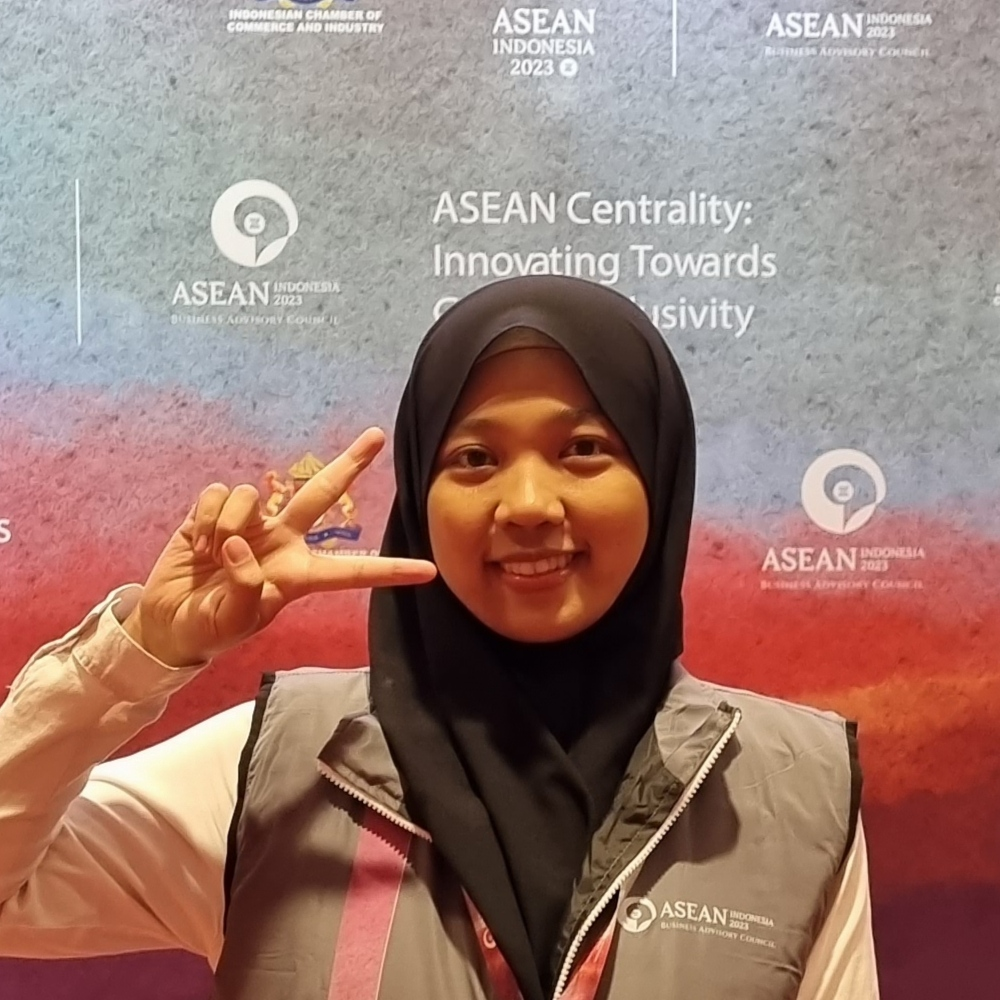

Yuli Sugiarti
LinkedIn, Email

Self-motivated, analytical and critical thinker, majoring in Agribusiness
(Faculty of Economics and Management). Have strong ability in decision making,
risk tolerance and numerical agility. Resilient, not easy to give up,
curious in learning new things, adaptive and creative. Interested in Tech, Market Research,
Creative Writing & Creative Solution.
Professional Experience
Apple Developer Academy
Learner to be a world-class developer [February 2024-December 2024]
- Following the scholarship program from Apple to be a world-class developer
- Learning about coding, design, research and professional skill
- Develop apps together with a team by accomplishing the assigned projects or tasks
PT. Lintas Teknologi Internasional
Business Development Manager [May 2021-April 2023]
- Helped the company in reaching the revenue up to Rp988.539.333 in April 2023,
after 2 years running the business from scratch
-
Recommendation Letter from PT. Lintas Teknologi Internasional
- Build and maintain the partnership and relation with transporters and customers
- Manage and work together with Business Development team
- Reach out new transporters and customers
- Arrange and execute the marketing strategy for developing the business
- Propose any creative and strategize ideas to support the business growth,
support creative media such as creating video, user guidance, being customer service etc.
- Identify and evaluate the problems about app to IT team to keep the good user experience in using the app.
- Evaluate the business progress and market condition to formulate the business strategy
PT. Lintas Teknologi Internasional
Business Analyst Intern [Feb 2021-Apr 2021]
- Supporting and contributing in the company’s strategy formulation and business plan development
- Working as part of the company’s Business team, working alongside the Technology team
- Work closely and report directly to one of the Co-Founders of the company
- Following an agile approach with full remote-working arrangements